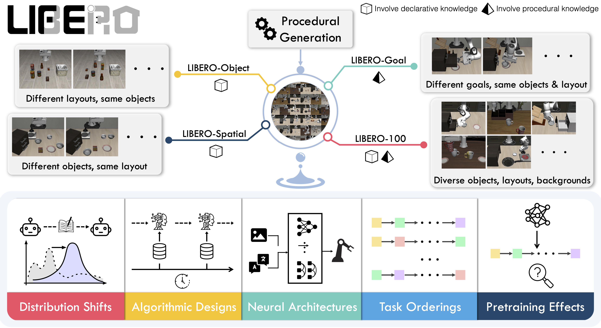

Sensitivity
Only the relevant preference changes inside each counterfactual group while the scene, instruction, and target object stay fixed.
SensitivityAcc · CounterfactualFlipAccLifelong robot learning benchmark
A research site for LIBERO, a benchmark for knowledge transfer in robot manipulation, and VLAPB, a personalization benchmark built around user preferences, counterfactuals, and task-level behavioral evaluation.

Benchmark focus
LIBERO studies declarative knowledge about objects and spatial relations together with procedural manipulation behavior. VLAPB extends this setting with personalized preference conditions that test whether a model can use, update, ignore, or disentangle user-specific context.
The project includes generated task suites, object integrations, feasibility review tooling, and result-generation scripts for reproducible benchmark reporting.
VLAPB suites
Only the relevant preference changes inside each counterfactual group while the scene, instruction, and target object stay fixed.
SensitivityAcc · CounterfactualFlipAccRows include irrelevant preferences and test either the relevant factor or the plain instruction.
SelectivityAcc · IrrelevantPreferenceInterferenceRateThe same user or profile group repeats across tasks that query stable profile factors.
ConsistencyAcc · UserLevelConsistencyAccThe same user appears before and after an explicit preference update; the second version should override the first.
AdaptabilityAcc · OldPreferenceErrorRateOne factor is updated while a different unchanged factor is tested, measuring cross-factor interference.
DisentanglementAcc · CrossFactorInterferenceRateUse the repo
The codebase keeps LIBERO installation, VLAPB suite definitions, feasibility review data, and result tooling together so experiments can stay close to the generated tasks.
conda create -n libero python=3.8.13
conda activate libero
pip install -r requirements.txt
pip install -e .